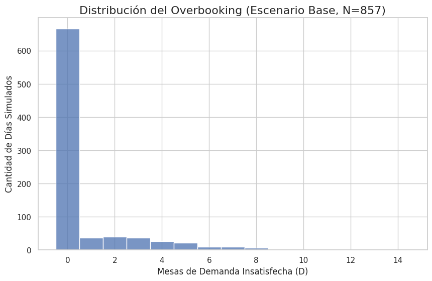
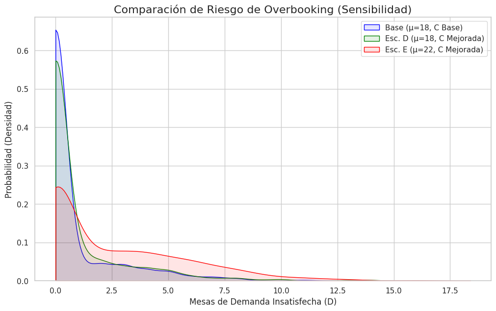

Introducción y bienvenida
SMC es una herramienta de pronóstico que usa el azar
para modelar sistemas complejos
Apliquemos el MMC a un problema de gestión de capacidad.
Meta: Estimar el riesgo de overbooking con un 2% de error y Z=1.96.
Definimos las distribuciones de nuestras variables aleatorias con
scipy.stats:
# Reservas (R)
dist_R = norm(loc=18, scale=5)
# Caídas (C)
caidas_dist_base = rv_discrete(
values=([0, 1, 2, 3],
[0.4, 0.1, 0.3, 0.2])
)
Para que el resultado sea confiable (no solo una anécdota), necesitamos un N (número de días) grande.
La fórmula estadística para encontrar $N$ es:
$$N = \left(\frac{Z \cdot \sigma}{E}\right)^2$$✓ Z (Confianza):
Lo tenemos (1.96)
✓ E (Error):
Lo tenemos (2% de la media)
✗ σ (Volatilidad):
¡No la conocemos!
Tenemos un dilema: No podemos calcular $N$ sin $\sigma$, ¡pero no podemos medir $\sigma$ sin haber simulado $N$ días!
Usamos un truco de dos pasos:
Ahora simulamos los XXXX días que calculamos en el Paso 2.
Generamos $N$ valores aleatorios para R y C, y calculamos la Ocupación Neta (O):
# Generar N días de R y C
reservas_final = dist_R.rvs(size=N_DIAS_SIMULADOS)
caidas_final = caidas_dist_base.rvs(size=N_DIAS_SIMULADOS)
ocupacion_neta = np.maximum(0, np.round(reservas_final)) - caidas_final
Aplicamos la lógica de negocio (Capacidad = 20) para medir el Riesgo (D).
# Calcular Métrica de Riesgo (D)
D_base = np.maximum(0, ocupacion_neta - CAPACIDAD_MAXIMA)
# Almacenar en Pandas para análisis
df_simulacion = pd.DataFrame({'Riesgo_D': D_base})
Resultado Base: El bar rechaza [Y.YY] mesas/día y tiene un riesgo de overbooking del [XX.XX]%.
Un histograma nos muestra la distribución del riesgo.
Vemos que hay días en los que el bar debe rechazar 5 o más mesas.
Aquí es donde el MMC genera valor. Probamos escenarios de negocio:
La simulación nos da una tabla comparativa de riesgo (el
df_resumen de Pandas):
Resultados de df_resumen:
Media Overbooking (D) Prob. Overbooking (%)
Escenario Base (μ=18, C Base) [Y.YY] [XX.XX]
Escenario D (μ=18, C Mejorada) [A.AA] [BB.BB]
Escenario E (μ=22, C Mejorada) [C.CC] [DD.DD]
El Escenario D (Mejor Gestión) aumenta el riesgo (de XX% a BB%). Las caídas eran un "amortiguador".
Decisión: Si el bar mejora la gestión, debe DISMINUIR su media de reservas (μ) para compensar.
La comparación visual del riesgo (gráfico KDE) lo deja claro:
El Escenario D (verde) aumenta el riesgo. El Escenario E (rojo) es insostenible.
❓
Espacio para que la audiencia haga preguntas
y se discutan puntos adicionales